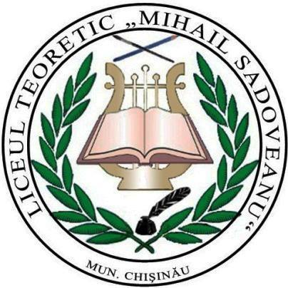
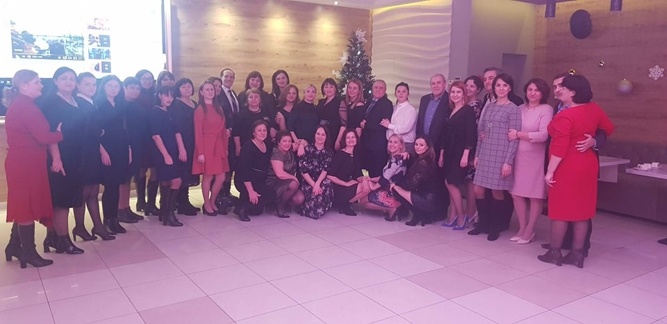

Este o cinste pentru Liceul Teoretic ”Mihail Sadoveanu” să poarte numele celui care a fost numitde scriitorul Geo Bogza „Ceahlăul prozei rmânești” În istoricul liceului se rețin trei momente importante: 1962- s-a înființat Școala medie rusă NR.11, în 1993- a fost reorganizată în Școala medie de limbă română, iar din 2003 devine LT Mihail Sadoveanu".
Noi, dascălii de astăzi din acest lăcaș de cultură. Liceul Teoretic„Mihail Sadoveanu”, ne dorim ca, aidoma lui Sadoveanu, discipolii noștri să nu se rătăcească în călătoria cunoașterii și, motivați/călăuziți de modele nemuritoare, să devină la rândl lor personalități ale neamului pe care îl prezintă
Ion Popov, director
Elena Buftea, dir.adjunct
Alexandra Bunduchi, dir.adjunct
Corina Jardan, dir.adjunct
Elena Revenco, dir.adjunct